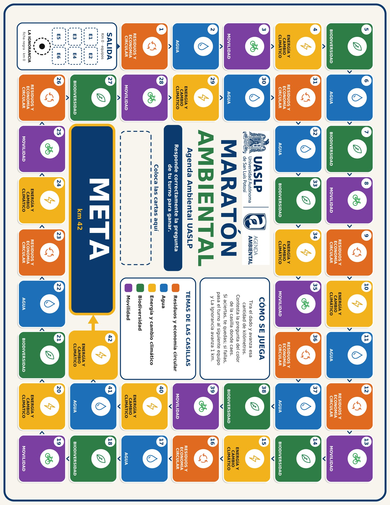

45
⚫ La Ignorancia: 0 km
⚀
42 kilómetros hacia una universidad sostenible.
Responde correctamente la pregunta de tu turno para ganar.
Tira el dado y avanza esa cantidad de kilómetros. Contesta la pregunta del color de la casilla donde caes. Si aciertas, te quedas; si fallas, pasa el turno al siguiente equipo y La Ignorancia avanza 1 km.
Las fotos solo se guardan en esta sesión (memoria del navegador) y se borran al cerrar.
Contacto Agenda Ambiental UASLP: ext. 7200 y 7210
